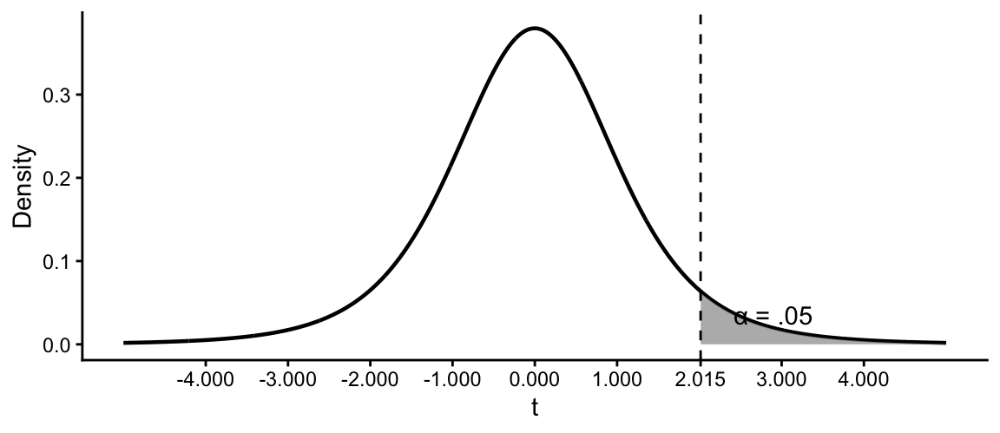

| df | α = .05 | α = .01 | α = .001 | α = .05 | α = .01 | α = .001 |
|---|---|---|---|---|---|---|
| 1 | 6.314 | 31.821 | 318.309 | 12.706 | 63.657 | 636.619 |
| 2 | 2.920 | 6.965 | 22.327 | 4.303 | 9.925 | 31.599 |
| 3 | 2.353 | 4.541 | 10.215 | 3.182 | 5.841 | 12.924 |
| 4 | 2.132 | 3.747 | 7.173 | 2.776 | 4.604 | 8.610 |
| 5 | 2.015 | 3.365 | 5.893 | 2.571 | 4.032 | 6.869 |
| 6 | 1.943 | 3.143 | 5.208 | 2.447 | 3.707 | 5.959 |
| 7 | 1.895 | 2.998 | 4.785 | 2.365 | 3.499 | 5.408 |
| 8 | 1.860 | 2.896 | 4.501 | 2.306 | 3.355 | 5.041 |
| 9 | 1.833 | 2.821 | 4.297 | 2.262 | 3.250 | 4.781 |
| 10 | 1.812 | 2.764 | 4.144 | 2.228 | 3.169 | 4.587 |
| 11 | 1.796 | 2.718 | 4.025 | 2.201 | 3.106 | 4.437 |
| 12 | 1.782 | 2.681 | 3.930 | 2.179 | 3.055 | 4.318 |
| 13 | 1.771 | 2.650 | 3.852 | 2.160 | 3.012 | 4.221 |
| 14 | 1.761 | 2.624 | 3.787 | 2.145 | 2.977 | 4.140 |
| 15 | 1.753 | 2.602 | 3.733 | 2.131 | 2.947 | 4.073 |
| 16 | 1.746 | 2.583 | 3.686 | 2.120 | 2.921 | 4.015 |
| 17 | 1.740 | 2.567 | 3.646 | 2.110 | 2.898 | 3.965 |
| 18 | 1.734 | 2.552 | 3.610 | 2.101 | 2.878 | 3.922 |
| 19 | 1.729 | 2.539 | 3.579 | 2.093 | 2.861 | 3.883 |
| 20 | 1.725 | 2.528 | 3.552 | 2.086 | 2.845 | 3.850 |
| 21 | 1.721 | 2.518 | 3.527 | 2.080 | 2.831 | 3.819 |
| 22 | 1.717 | 2.508 | 3.505 | 2.074 | 2.819 | 3.792 |
| 23 | 1.714 | 2.500 | 3.485 | 2.069 | 2.807 | 3.768 |
| 24 | 1.711 | 2.492 | 3.467 | 2.064 | 2.797 | 3.745 |
| 25 | 1.708 | 2.485 | 3.450 | 2.060 | 2.787 | 3.725 |
| 26 | 1.706 | 2.479 | 3.435 | 2.056 | 2.779 | 3.707 |
| 27 | 1.703 | 2.473 | 3.421 | 2.052 | 2.771 | 3.690 |
| 28 | 1.701 | 2.467 | 3.408 | 2.048 | 2.763 | 3.674 |
| 29 | 1.699 | 2.462 | 3.396 | 2.045 | 2.756 | 3.659 |
| 30 | 1.697 | 2.457 | 3.385 | 2.042 | 2.750 | 3.646 |
| 40 | 1.684 | 2.423 | 3.307 | 2.021 | 2.704 | 3.551 |
| 60 | 1.671 | 2.390 | 3.232 | 2.000 | 2.660 | 3.460 |
| 80 | 1.664 | 2.374 | 3.195 | 1.990 | 2.639 | 3.416 |
| 100 | 1.660 | 2.364 | 3.174 | 1.984 | 2.626 | 3.390 |
| 120 | 1.658 | 2.358 | 3.160 | 1.980 | 2.617 | 3.373 |
| ∞ (z) | 1.645 | 2.326 | 3.090 | 1.960 | 2.576 | 3.291 |
Appendix B — t-Distribution Critical Values
The t distribution is used for inference about a population mean when the population standard deviation, \(\sigma\), is unknown and is estimated with the sample standard deviation, \(s\). The appropriate critical value depends on:
- the degrees of freedom;
- the significance level, \(\alpha\); and
- whether the test is one-tailed or two-tailed.
For a one-sample t test, \(df=n-1\). Other t tests use different degrees-of-freedom formulas.
B.1 Using the Table
- For a right-tailed test, use the positive critical value shown in the one-tailed section.
- For a left-tailed test, use the negative of the listed one-tailed value.
- For a two-tailed test, compare the absolute obtained statistic, \(|t|\), with the positive value in the two-tailed section.
- For a confidence interval with confidence level \(1-\alpha\), use the corresponding two-tailed critical value.
- If the exact degrees of freedom are not listed, use the next smaller listed value as a conservative classroom approximation.
- Welch’s t test can produce noninteger degrees of freedom. Round down when using this printed table unless instructed to use software.
ImportantSelect the column before examining the result
The research hypothesis determines whether a test is one-tailed or two-tailed. Do not select the tail after seeing the sample result.
B.2 Worked Example
Suppose a one-sample test has \(n=6\), so:
\[ df=n-1=5 \]
For a right-tailed test with \(\alpha=.05\), locate row \(df=5\) and the one-tailed \(\alpha=.05\) column. The critical value is approximately:
\[ t_{critical}=2.015 \]
Reject the null hypothesis only if the obtained t statistic is greater than 2.015. For a left-tailed test, the corresponding critical value would be \(-2.015\).

The final row, \(df=\infty\), gives the corresponding standard normal critical values. As degrees of freedom increase, the t distribution approaches the standard normal distribution.